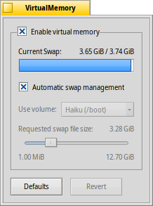

Sanal Bellek
Sanal Bellek
| Masaüstü Çubuğu: | ||
| Konum: | /boot/system/preferences/VirtualMemory | |
| Ayarlar: | ~/config/settings/kernel/drivers/virtual_memory ~/config/settings/VM_data - Panelin pencere konumunu saklar. |
Sanal Bellek, eğer sistem belleği başka şeyler için gerekecek olursa belleği sabit diskinize takas edebilmenizi sağlar. Bu yüzden ne kadar çok belleğiniz olursa olsun sanal belleği bol tutmak her zaman yararlıdır.
Normalde, takas dosyası önyükleme bölümüne yazılır. O konumda depolama alanınız az ise 'ni devre dışı bırakabilir ve açılır menüden başka bir bağlanmış disk seçebilirsiniz. Takas dosyası boyutu aşağıdaki kaydırıcı ile belirlenir.
Eğer sisteminiz takas dosyasının yazımı ve okumasından dolayı takılmaya başlarsa girdi/çıktı yoğunluğunu azaltmak için sanal belleği depolamak üzere başka bir sabit disk kullanabilirsiniz. Aynı sabit disk üzerinde başka bir disk bölümü bu konuda yardımcı olamayacaktır. Elbette sistem belleğini (RAM) yükseltmek yapabileceğiniz en yerinde hareket olacaktır...
| her şeyi öntanımlı değerlere sıfırlar. | ||
| Sanal Bellek tercihlerini başlattığınızdaki ayarları geri getirir. |